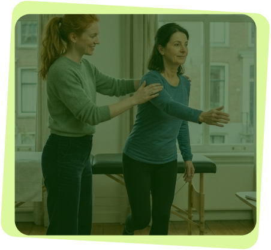
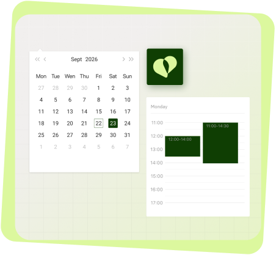
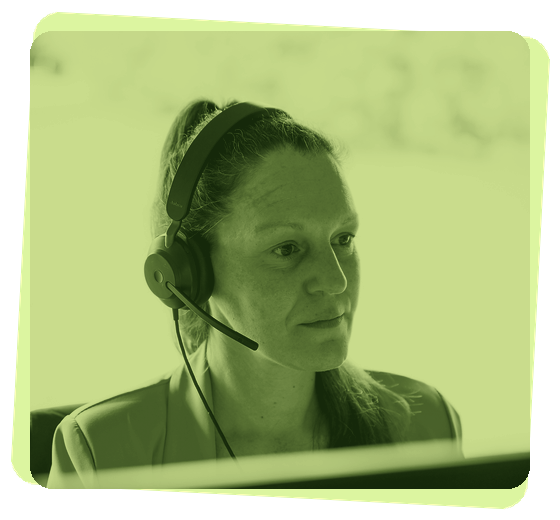

Medispring Physio neemt de administratie van u over: voorschriften, sessies, elektronische facturatie, eAgreement en agenda. In een solo- of groepspraktijk of in een wijkgezondheidscentrum.
Laat uw gegevens achter. Een Medispring-adviseur belt u terug of plant uw demo.
Door dit formulier te versturen, aanvaardt u ons privacybeleid.
U hoeft niet alles in één keer onder de knie te hebben. Medispring legt u uit wat elke dienst voor u verandert en integreert hem geleidelijk in uw dagelijkse praktijk.
Het getuigschrift voor verstrekte hulp elektronisch naar het ziekenfonds sturen wanneer de patiënt het volledige honorarium betaalt, buiten de derdebetalersregeling.
Elektronisch factureren aan het ziekenfonds wanneer u de derdebetalersregeling toepast.
Kennisgevingen en akkoordaanvragen naar de adviserend artsen van de ziekenfondsen sturen en hun akkoord elektronisch ontvangen.
De verzekerbaarheidsgegevens van de patiënt raadplegen: zijn verzekeringsstatus en zijn rechten bij het ziekenfonds.
Ze waarderen hoe het hun taken vereenvoudigt en tegelijk voldoet aan de eisen van het terrein.
“Medispring is een intuïtieve en krachtige tool, perfect aangepast aan de realiteit van een wachtpost. Het vergemakkelijkt onze dagelijkse organisatie, verbetert de samenwerking in het team en versterkt de kwaliteit van de zorg voor patiënten. De ondersteuning die het team biedt is reactief, professioneel en altijd oplossingsgericht.”
“Je merkt duidelijk dat Medispring door artsen is gemaakt. Alles voelt heel logisch en intuïtief aan in de dagelijkse praktijk.”
“Ik hou van het idee van een coöperatie. Je voelt dat de artsen gehoord worden in hun verzoeken om verbeteringen, en dat de software zich blijft aanpassen aan onze behoeften.”
“De software presteert uitstekend in het dagelijks gebruik, staat mee aan de top van de eGezondheidstools en beantwoordt perfect aan de eisen en de striktheid van onze praktijk. Wat ooit een verplichting was, is nu een comfort geworden in ons werk.”
Bekijk de software in actie: opvolging van de sessies, elektronische facturatie en agenda.
Opvolging van de sessies, elektronische facturatie en agenda, verbonden met de Belgische eHealth-diensten. In een solo- of groepspraktijk of in een wijkgezondheidscentrum.

Medispring geeft u een duidelijk overzicht van elke lopende behandeling, zonder dat u informatie hoeft op te zoeken.
Aan het einde van het bezoek zorgt Medispring voor alles, van het tellen van de sessies tot het verzenden naar de ziekenfondsen.

Medispring verbindt uw praktijk met uw patiënten en uw collega's, in alle veiligheid.
Bent u nog verbonden aan een ander softwarepakket? Medispring dekt de resterende looptijd van uw huidige contract: tot 9 maanden gratis, zodat u kunt starten wanneer u wilt. Migratie inbegrepen zonder bijkomende kosten!
De volledige gids voor de kinesist om de veranderingen van 2027 te begrijpen en voor te bereiden.

Medispring dekt de resterende looptijd van uw huidige contract. Geen dubbele kosten, tot 9 maanden gratis.
Ja, zonder bijkomende kosten.
eAttest: de patiënt betaalt het volledige honorarium, buiten de derdebetalersregeling. eFact: u past de derdebetalersregeling toe. In beide gevallen gebeurt de verzending naar het ziekenfonds elektronisch.
Kennisgevingen en akkoordaanvragen naar de adviserend artsen van de ziekenfondsen sturen en hun akkoord elektronisch ontvangen.
De verzekerbaarheidsgegevens van de patiënt raadplegen: zijn verzekeringsstatus en zijn rechten bij het ziekenfonds.
Het is 3 jaar geldig en kan vanaf 90 dagen vóór de vervaldatum worden hernieuwd. Begin op tijd: de procedure om het te verkrijgen kan tot 10 dagen duren.
Ja. In een solo- of groepspraktijk of in een wijkgezondheidscentrum: Medispring Physio past zich aan uw praktijk aan.
De prijs hangt af van uw situatie. Bereken hem in een paar klikken met de knop “Mijn offerte berekenen”. Support en migratie zijn inbegrepen, zonder bijkomende kosten.
Patiëntendossier, voorschriften, facturatie en agenda samengebracht in één tool, verbonden met de Belgische eHealth-diensten.